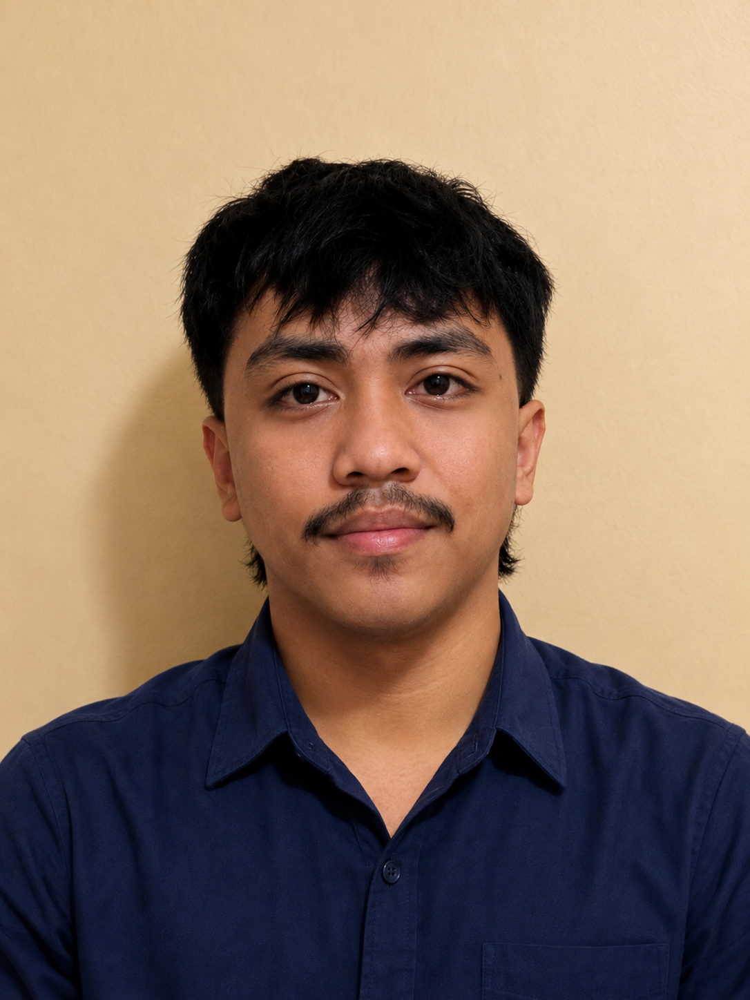

Your reliable
extra pair of hands.
I'm Mark Castro. I help busy entrepreneurs and businesses stay organized, handle day-to-day tasks, and create more room for the work that matters.

Mark Castro
Mark Kevin Castro · Philippines
Professional mindset. Genuine work ethic.
I'm a motivated General Virtual Assistant based in the Philippines. While I'm new to the professional VA industry, I bring strong attention to detail, a willingness to learn, dependable communication, and a serious commitment to doing work correctly.
My goal is simple: make your workload easier, keep tasks organized, and become a dependable part of your workflow.
Support that keeps
your business moving.
Practical remote assistance for recurring tasks, organization, communication, and digital operations.
Administrative Support
Data entry, document formatting, file organization, task tracking, and routine admin work.
Email Management
Inbox organization, sorting, follow-ups, and professional email support.
Calendar Management
Scheduling, reminders, appointment coordination, and calendar organization.
Research & Data
Web research, data collection, spreadsheet updates, and organized summaries.
Customer Support
Professional communication, inquiry handling, follow-ups, and information management.
Social Media Assistance
Content organization, scheduling support, Canva graphics, and content calendars.
A practical digital toolkit.
Tools and capabilities I am prepared to use and continue developing as I support clients.
Simple process. Clear communication.
Clarify the objective, priority, deadline, and preferred process.
Break the work into clear actions and keep information easy to find.
Complete tasks carefully and communicate progress when needed.
Review details, meet the deadline, and leave everything organized.
See what I can build for you.
These are practice samples created to demonstrate capability. They are not presented as previous client work.
Weekly Operations Dashboard
A clean tracker for priorities, deadlines, status updates, and follow-ups.
Lead Research Brief
A structured format for gathering prospect information and turning it into an easy-to-use summary.
30-Day Content Calendar
A practical planning system for topics, captions, dates, and publishing status.
Ready to make your workload lighter?
If you're looking for a dependable General VA who is organized, motivated, and ready to learn your workflow, I'd love to hear from you.
VAmarkcastro@gmail.com →+63 952 475 4839